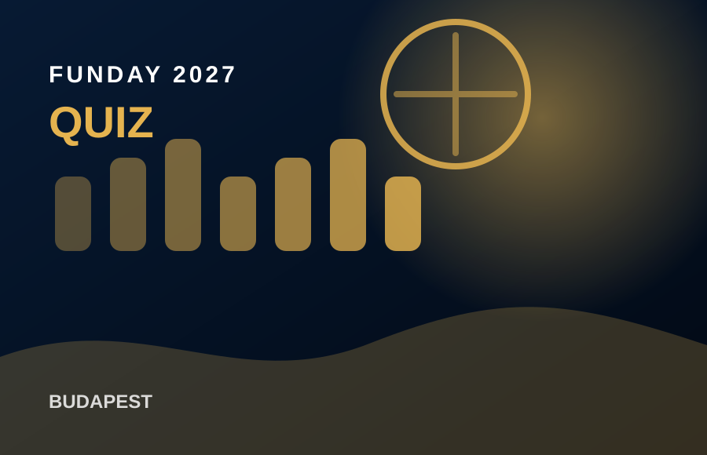
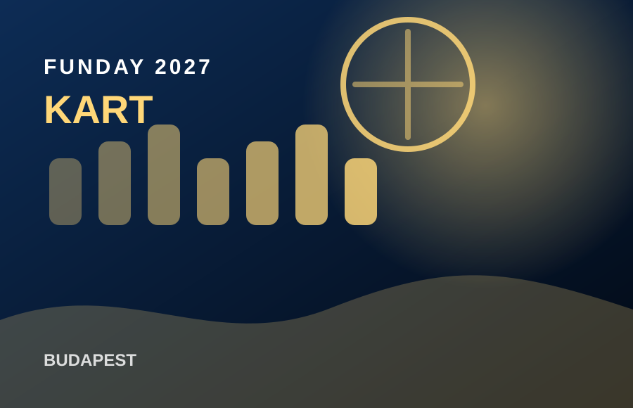
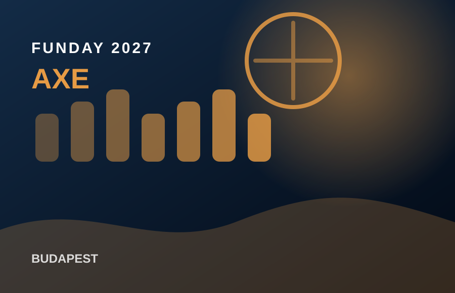
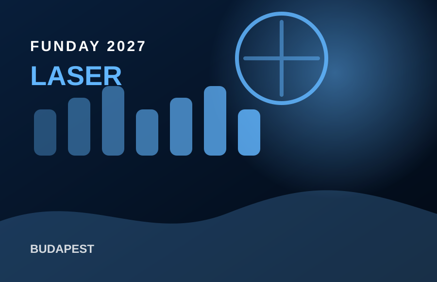
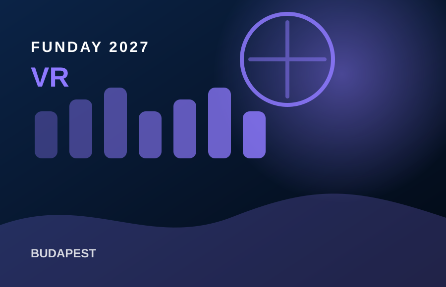
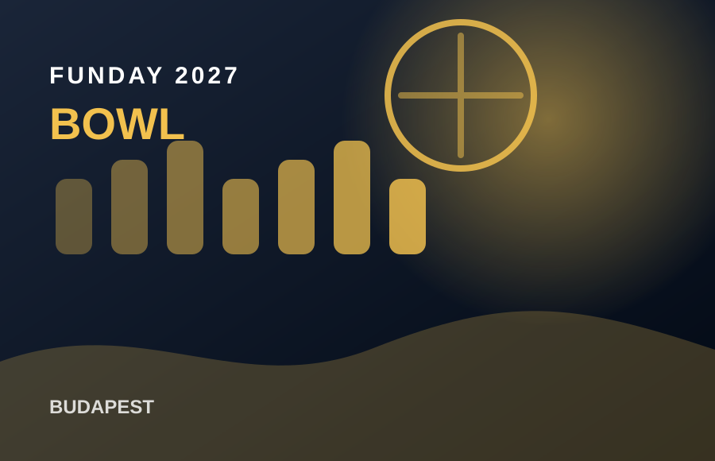
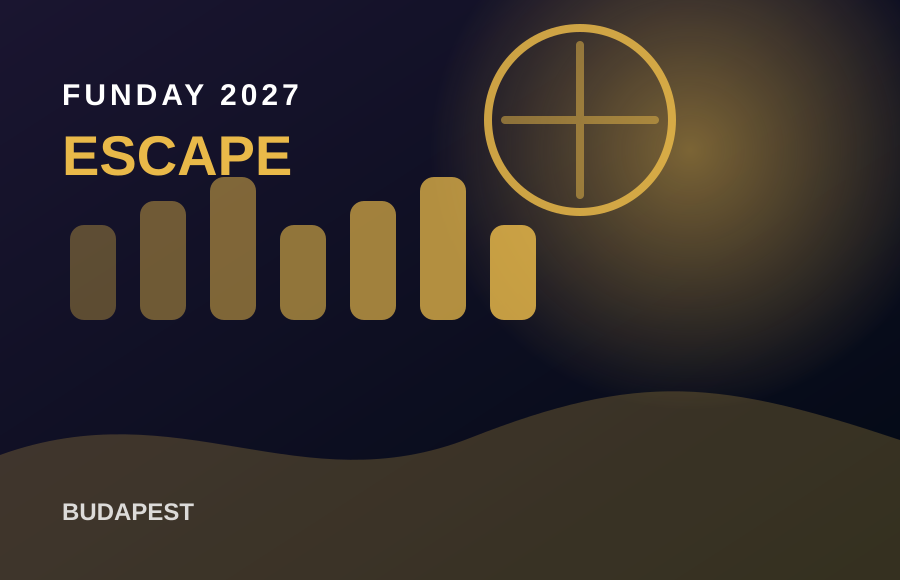
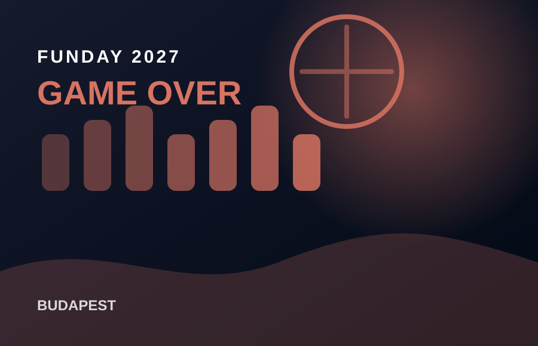
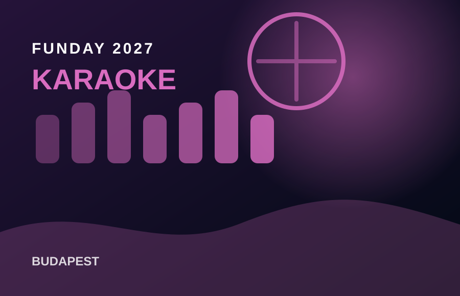
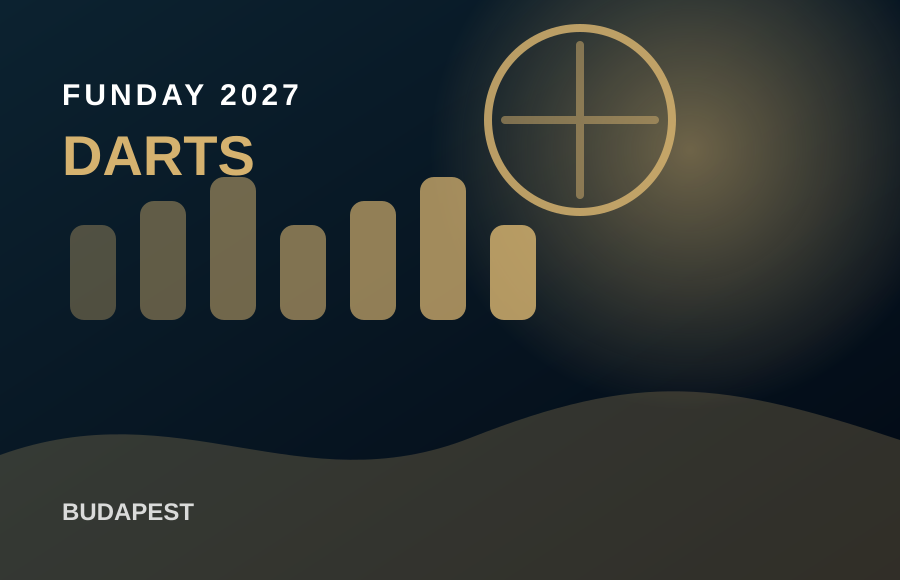

Leonoria Kvízbox
1066 Budapest, Jókai u. 18.
Egy arénában akár 12 fő. TV-show jellegű kvíz, egyéni vagy páros verseny, fény- és hangeffektekkel.
December 30-i budapesti programötletek 10 főre: verseny, közös játék, szabadulás és esti levezetés.

Egyszerű szabály, mérhető eredmény, 10 fővel is működik.

1066 Budapest, Jókai u. 18.
Egy arénában akár 12 fő. TV-show jellegű kvíz, egyéni vagy páros verseny, fény- és hangeffektekkel.

1191 Budapest, Vak Bottyán u. 75.
Nagyobb beltéri elektromos gokartpálya. 10 főnél futamokra osztható, időméréssel és egyértelmű versennyel.

1074 Budapest, Dohány u. 30/A.
Instruktoros baltadobás, klasszikus és interaktív célokkal. Könnyen csinálható belőle pontozott házibajnokság.

1138 Budapest, Váci út 178., Duna Plaza II. em.
Nagy beltéri lézerharc több játékmóddal és statisztikával. 10 fő már pont jó két csapatra.

1134 Budapest, Róbert Károly krt. 67.
Multiplayer VR, csapatjátékok és VR-szabadulás. A hely egyszerre akár 14 játékost is tud fogadni.

1117 Budapest, Budafoki út 111–113.
Nyolc bowlingpálya, étterem és bár egy helyen. 10 fővel két-három pályán egyszerűen megy a csapatverseny.
Két csapat, párhuzamos pályák, utána eredményhirdetés.

1066 Budapest, Zichy Jenő u. 45.
Új generációs, látványos szabadulószobák. 10 főnél két párhuzamos szobával valódi csapatverseny lehet belőle.

1132 Budapest, Victor Hugo u. 16.
15 filmes díszletű pálya, köztük horror és nyomozós szobák; bár és étterem is van helyben. 10 fő könnyen szétosztható két szobába.
Olyan helyek, ahol maga a program és az esti ital egy helyen marad.

1077 Budapest, Wesselényi u. 55.
Privát karaoke: a VIP szoba 8–15 főre való. Saját társaság, saját ital, nincs nyilvános színpad.

1054 Budapest, Bajcsy-Zsilinszky út 64.
Automata pontozású steel darts, 11 pálya és 0–24-es bár. Jó esti blokk, mert a játék és az ivás egy helyen marad.